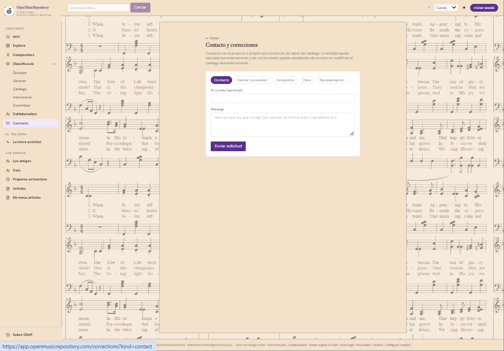
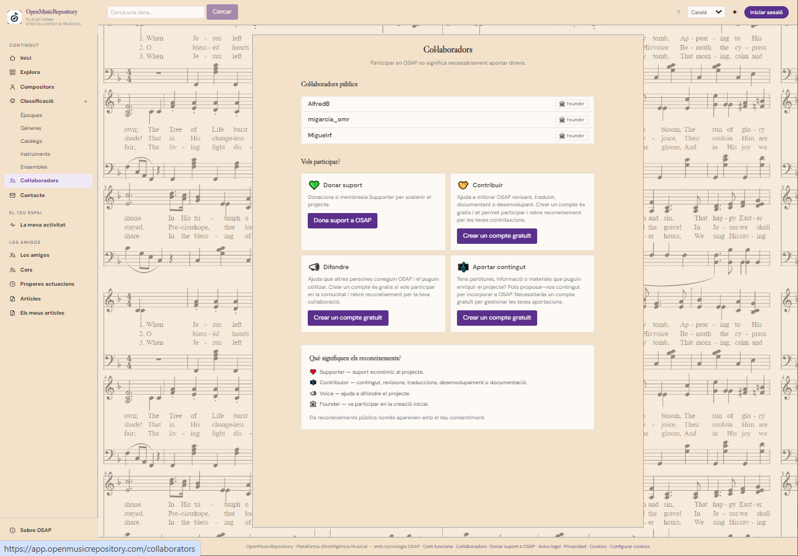

Apoyo económico
Die Infrastruktur und den Fortbestand des Projekts unterstützen.
Benutzerhandbuch
Erfahren Sie, wie Sie sich an OSAP beteiligen können und wie das Projekt die Verbindung zur Musikgemeinschaft sucht.

La página Kontakt und Korrekturen dient dazu, dem Team eine Nachricht zu senden oder ein Katalogproblem zu melden. Wenn Sie das Formular von einem bestimmten Werk aus öffnen, kann die Anfrage automatisch diesem Kontext zugeordnet werden.
Beschreiben Sie das Problem klar. Geben Sie bei einer Titelkorrektur den angezeigten und den Ihrer Meinung nach richtigen Titel an. Bei Fragen zur Urheberschaft nennen Sie eine verlässliche Referenz, Ausgabe oder Quellseite. Geben Sie keine Passwörter oder unnötigen personenbezogenen Daten an.
Anfragen müssen erst geprüft werden; durch das Absenden werden Katalogdaten nicht automatisch geändert.
Wenn Sie ein noch nicht aufgeführtes Musik-Repository kennen, können Sie es über Quellen vorschlagen, sofern das Formular verfügbar ist. Geben Sie Name, Typ und Webadresse an und erläutern Sie kurz, welches Material es bietet und warum es für OSAP nützlich wäre.
La sección Freunde beschreibt das Ziel von OSAP, sich mit der Musikwelt zu vernetzen: Ensembles, Kreative und Orte, die musikalische Informationen und Aktivitäten teilen. Es ist nicht nur eine Ressourcenliste, sondern ein Treffpunkt für Gemeinschaften und musikbezogene Inhalte.
Jeder Chor kann die Aufnahme beantragen. Die Administration des Chors kann das Profil pflegen und zugehörige Hinweise oder Materialien hinzufügen, darunter YouTube-Videos und weitere nützliche Links. Vergewissern Sie sich vor einer Veröffentlichung, dass Sie die Inhalte teilen dürfen und die Links geeignet sind.
Registrierte Nutzer können Artikel zu musikalischen Themen schreiben. Die Inhalte sollten originell und für die Gemeinschaft nützlich sein; Quellen und Materialien Dritter müssen korrekt gekennzeichnet werden.
In diesem Bereich können bestimmte Administratoren Ankündigungen kommender Aufführungen veröffentlichen. Diese Funktion steht nicht unbedingt allen registrierten Konten zur Verfügung.

La sección Mitwirkende erläutert Beteiligungsmöglichkeiten und zeigt Anerkennungen, sofern vorhanden und zur Veröffentlichung freigegeben. Ob ein Name öffentlich sichtbar ist, hängt von den geltenden Einstellungen und Berechtigungen ab; nicht jede Kontoaktivität wird öffentlich angezeigt.
Die Infrastruktur und den Fortbestand des Projekts unterstützen.
Bei Daten, Überprüfungen, Korrekturen, Übersetzungen oder Dokumentation helfen.
OSAP bei musikinteressierten Personen und Gemeinschaften bekannt machen.
Nach der Anmeldung kann der Bereich Meine Aktivitäten Downloads, Beiträge, Ressourcen und Statistiken zu Ihrem Konto anzeigen. Laufende Vorgänge und materialisierte Elemente richten sich nach der im System erfassten Aktivität.